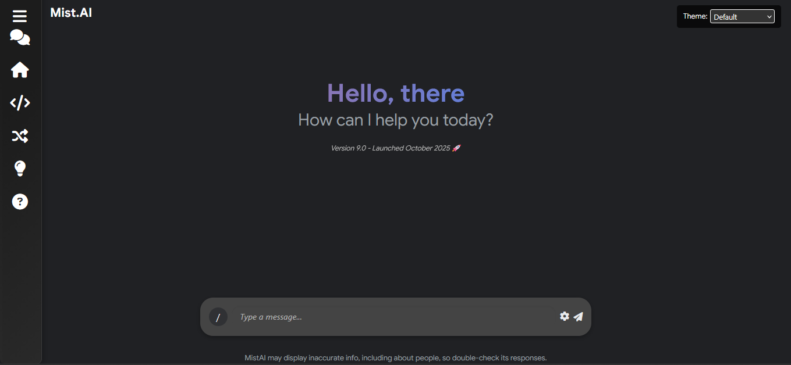

Mist.AI Web
The chatbot — a full-scale AI assistant platform supporting multi-model inference across Gemini, Mistral, and Cohere. Real-time web search, session memory, chat threads, file + image understanding, 12 custom themes, PWA support, and a browser extension for Chrome and Firefox. V10 marks the final web release — 9,000+ lines, the largest codebase I've built.